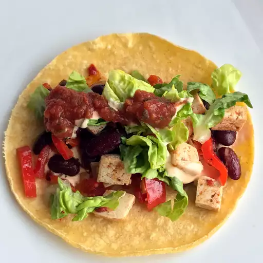

Home
Black Bean and Tofu Tacos

Description
Tacos with a blend of tofu, black beans, lettuce, tomato, and avocado.
Makes 8 servings
Prep time: 20-30 minutes
Cook time: 20-30 minutes
Ingredients
- 1 16oz package of firm tofu, drained and cut into small cubes
- 1 16oz can black beans
- 16oz mushrooms, sliced
- 1 avocado, peeled, pitted, and diced
- 2 large tomatoes, diced
- 1 onion, diced
- 2 cups shredded lettuce
- 8 taco shells, heated
- 2 tbsp taco seasoning
- 2 tbsp vegetable oil
- Taco sauce
- salt and pepper
Steps
- Prepare tofu, mushrooms, tomatoes, onion, and lettuce.
- Add vegetable oil to large pan or skillet. Preheat over low heat for 5 minutes.
- Add mushrooms to pan and cook on low heat, 5-10 minutes.
- Add tofu, onion, black beans, and taco seasoning to pan. Cook 8-12 minutes.
- Prepare avocado.
- Spoon mixture into taco shells. Top with lettuce, tomato, avocado, and taco sauce. Serve.